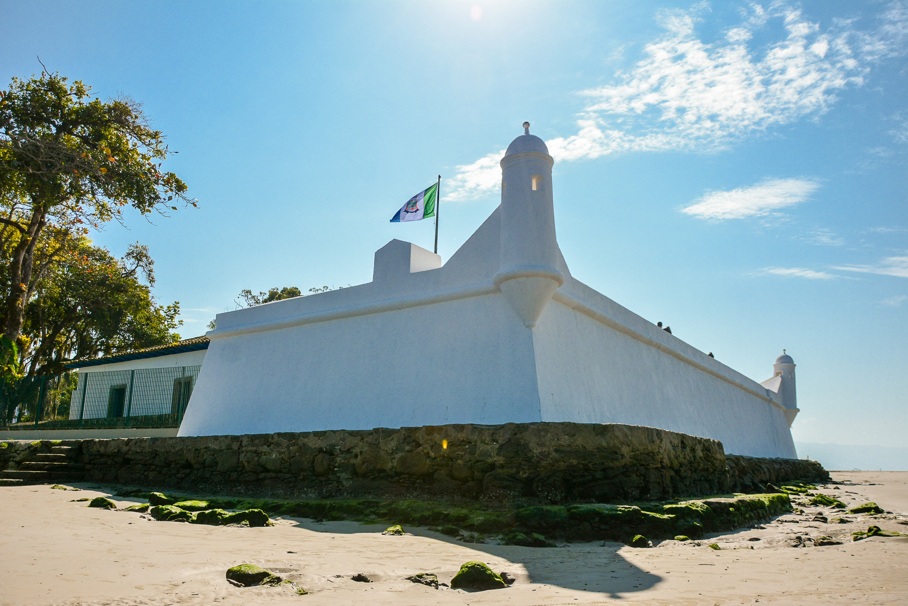
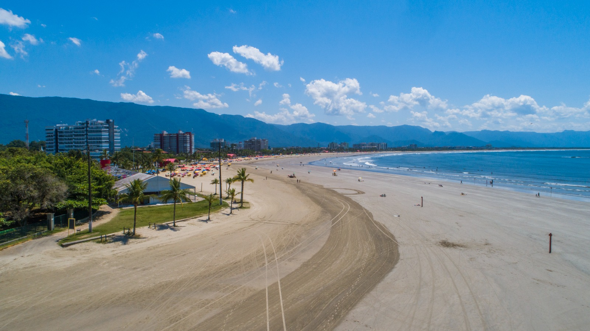

A história de Bertioga está diretamente ligada ao Forte São João, construído no século XVI durante o período colonial. O forte foi essencial para proteger o litoral paulista contra invasões estrangeiras e ataques de piratas. Além disso, a região teve importância histórica por abrigar conflitos entre colonizadores e povos indígenas. Assim, o Forte São João não só marcou a defesa do território, como também contribuiu para o desenvolvimento histórico de Bertioga.
Além da importância do Forte São João, a região de Bertioga foi inicialmente habitada por povos indígenas, que viviam da pesca e da coleta. Com a colonização portuguesa, o local passou a ter função estratégica por sua posição no litoral e proximidade com Santos. Ao longo do tempo, Bertioga deixou de ser apenas um ponto militar e se desenvolveu como vila, crescendo economicamente e urbanamente. Hoje, a cidade combina seu valor histórico com o turismo, sendo conhecida por suas praias e patrimônios culturais.
| Localização | População | Economia | Pontos turísticos |
|---|---|---|---|
| Litoral de São Paulo | Aprox. 65 mil habitantes | Turismo, comercio e serviços | Praia da Enseada, Forte São João, Parque Restinga |